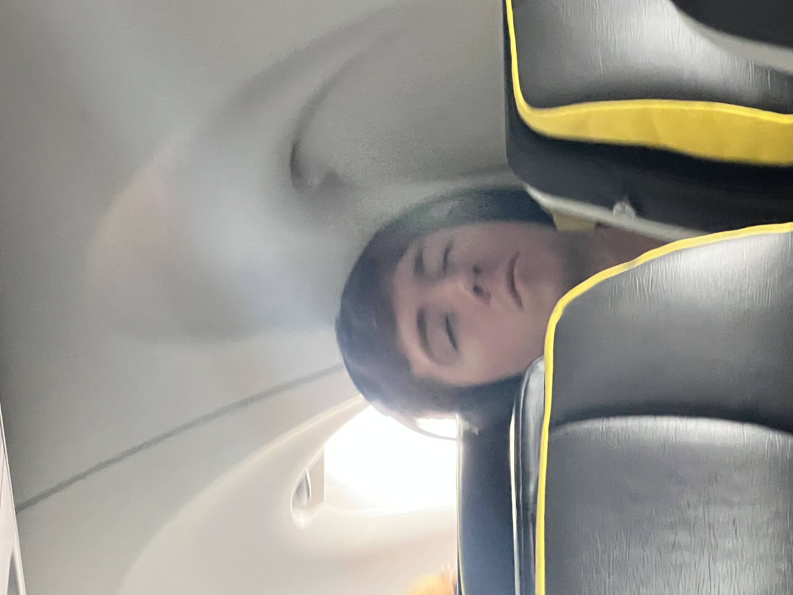
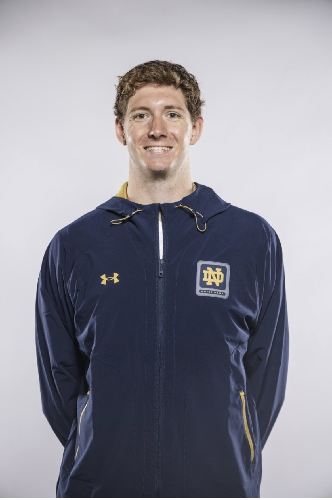

My life
outside of school is dedicated to swimming, where I devote nearly twenty hours of my week towards.
The key to becoming an elite athlete is to get proper rest, which I generate through naps and eating the best that I can. When I have any free time, I typically golf, throw the football or baseball, try to discover new music, or play board games. However, I remain focused on my swimming because I will only be able to do it at such a high level for so long.
Achieving a Dream

